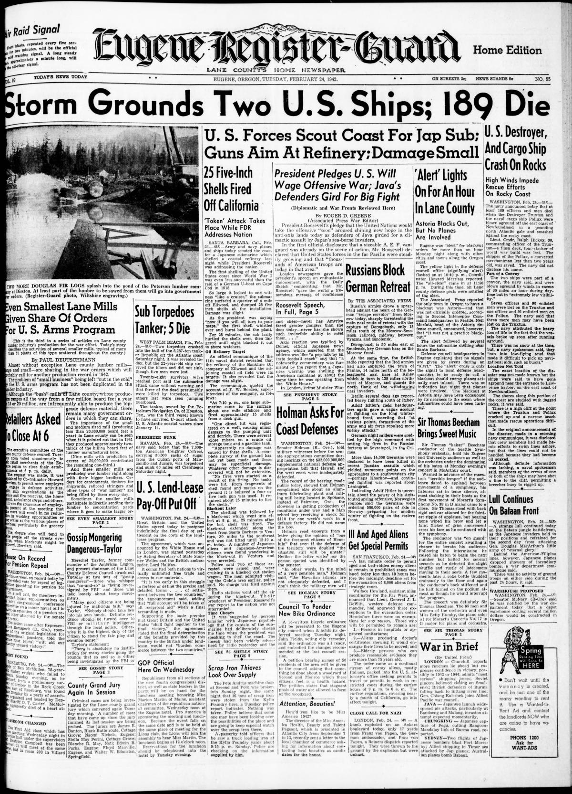
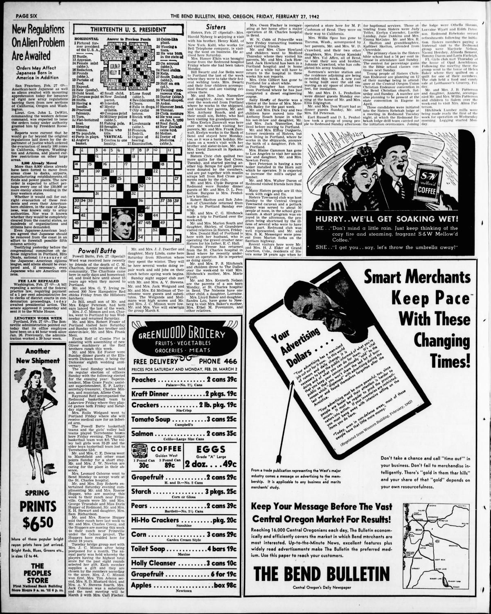

HN HN-530 · February 24, 1942 · Civil Rights & Social Change > Immigration, Refugees & Displacement > Wartime internment and compulsory relocation
Source: Indianapolis Times, p. 5 — original page; National Archives, Executive Order 9066.
Report: A report said authorities were sweeping 46 restricted defense zones to find people classified as enemy aliens who had missed relocation deadlines; the figures included about 2,800 Japanese nationals.
Assessment: This was one early alien-exclusion measure and must not be conflated with the later much broader race-based removal and incarceration of Japanese Americans, including citizens, enabled by the February 19 executive order. Government labeling did not establish that the individual people were spies or criminals.
Authentic scans retrieved from Historic Oregon Newspapers (University of Oregon). Article crops are located using the archive's own OCR word coordinates and rendered at native crop resolution; page scans are reduced-size access renditions. No images were generated, mocked, or retouched.


Not yet acquired. Queued for provider-specific acquisition testing (see source-acquisition manifest).
URL (preserved verbatim): https://newspapers.library.in.gov/?a=d&d=IPT19420224.1.5
Saved research report: Historical_Newspaper_Event_Research_528-552_2026-10-23.md
Evidence note: A newspaper report means a historical publication made a claim; it does not establish that claim as fact. Contemporary reporting is separated from later scholarly context and our own assessment.